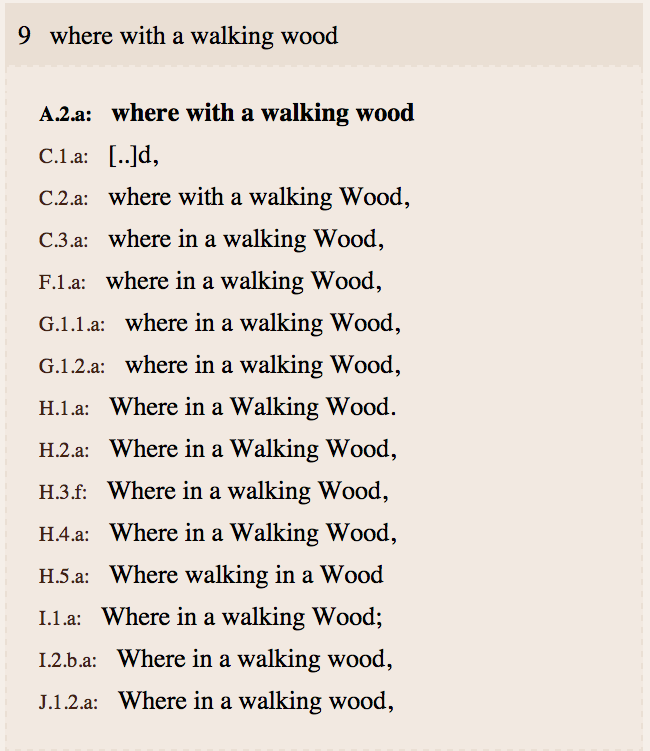
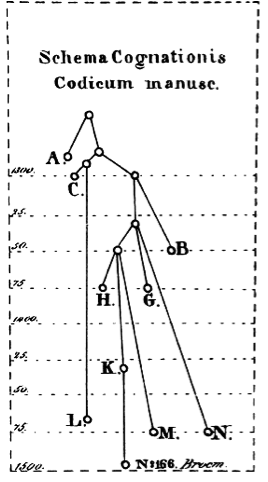
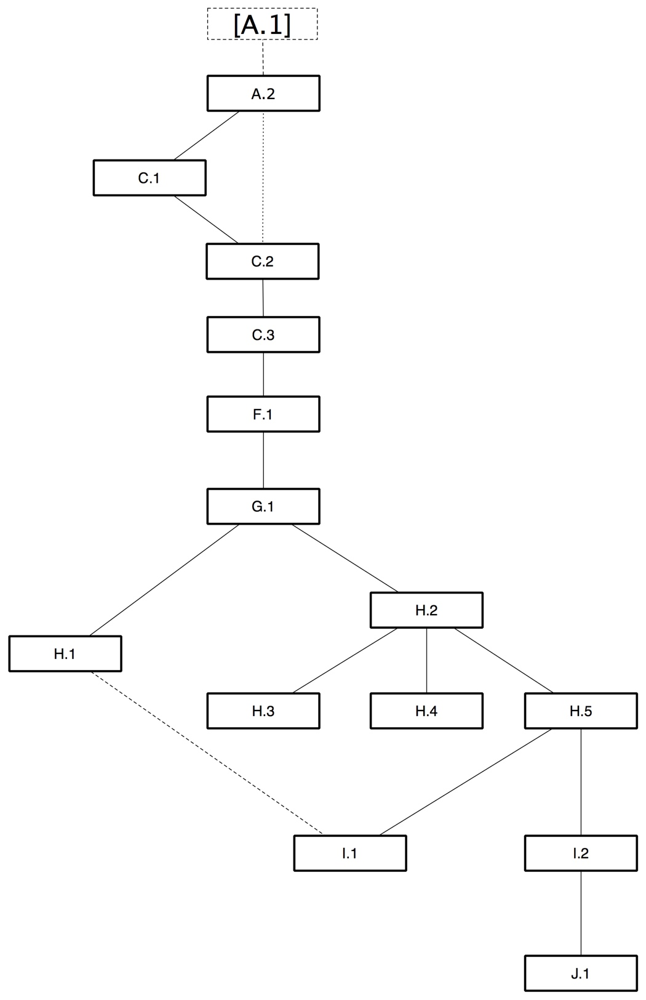
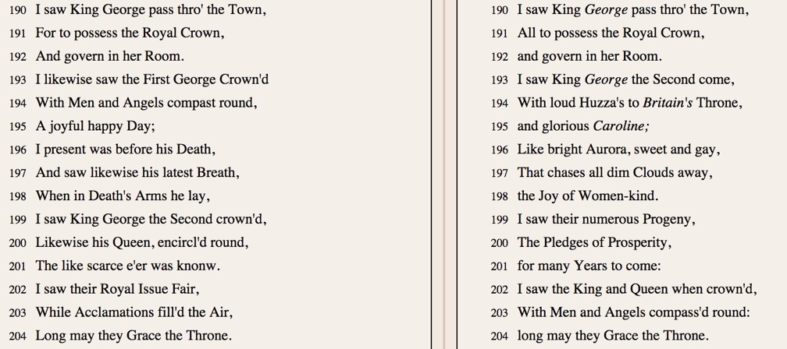
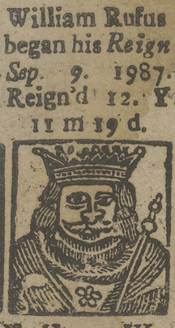
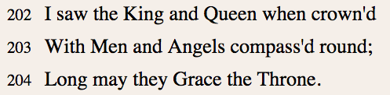

6. The ballad's textual descent
The text of The Wandering Jew's Chronicle also descends in distinctive ways. The Chronicle edition includes a transcription of one copy of each edition, which can be displayed individually and in parallel with other transcriptions, together with a critical apparatus function showing variations across the tradition, invoked by clicking a line or a word. For example. the apparatus can show how Line 9 originally reading in A.2 as 'where with a walking wood' - Thomas Spotus' story about the men of Kent - is repeated and amended in later editions:

Fig. 15. Line 9 across all editions of the Chronicle.
The amended forms 'in a walking wood' and more so 'walking in a wood' were perhaps prompted by the loss of contextual knowledge in the mind of a reviser, or an expectation that the same knowledge was no longer widespread among readers, and that the reference to a walking wood was liable to confuse a public more familiar with Macbeth than the Chronicle of Thomas Spot.
As the reader looks across the editions line by line, certain patterns become evident. The discovery and analysis of these patterns is the work of textual scholarship, which is most commonly carried out for the purposes of editing, but is also of use for book history. From the perspective of textual scholarship (or criticism, as it is traditionally known) all versions of The Wandering Jew's Chronicle are witnesses to acts of copying, carried out with variable degrees of accuracy. Distinctive variations - errors, in particular - transmitted between versions of the text can indicate how they are related. This set of relations can then be visualised in a tree-diagram or 'stemma', an emblem of traditional textual criticism.

Fig. 16. The first stemma diagram, from Carl Schlyter's Corpus Iuris Sueo-Gotorum Antiqui (1827).
Although the stemma's emergence in the early nineteenth century places it within the Chronicle period, the genealogical metaphor that it embodies has a longer history.[1] Recently, the humanistic discipline of drawing up a stemma has converged (or more accurately, has been reunited with) the discipline within evolutionary biology known as phylogenetics. The stemma of the Wandering Jew's Chronicle presented below combines a manual analysis of textual variations with a phylogenetic analysis performed in collaboration with Heather Windram and Chris Howe.[2]

Fig. 17. Stemma of the Chronicle's textual descent.
While a stemma may be used as an aid to the reconstruction of an original text (its classical function) it is in itself simply a visualisation of relationships between texts.[3] The Chronicle stemma shows only how the verbal text was copied: it does not show the descent of the ballad's illustrations, title, imprint or tune; nor does it trace the ballad's increasingly multiple sources; or its reception. It is, however, bonded to the ballad's broader external history in that it was drawn up with the occasional help of regnal history and, more conclusively, the trade-dates of the ballad's printers and publishers. Indeed, one of the major findings of the phylogenetic analysis was that the internal evidence proved at one point insufficient to determine the descent, and that textual scholarship should incorporate external evidence where it is available - in short, stemmatologists must be book historians.[4]
This finding also applies in the opposite direction, as the stemma can be seen to visualise some of the historical processes that shaped its textual descent. Patterns and trends within the book trade, and even the technology of the book, show up in the descent, The A-G editions, for example, descend in a linear, dynastic pattern that is characteristic of the centralised book trade of late- seventeenth-century London, in which copyrights were jealously guarded and descended only through patrimony or direct sale. Stemmata of manuscript traditions tend not to contain repeated, linear sequences: they are branchier, reflecting the dynamics of making copies from a manuscript, copies then travelling elsewhere to be copied in turn.[5] The divergent pattern of the lower half of the stemma reflects the radical diversification of production within the print trade after the reforms of 1695 and 1710, as revising and reprinting of the ballad took place concurrently and over a larger area. Thestemma's tracing of the ballad's textual history therefore also traces the broader spatial and economic history of the book trade.
The stemma is also useful for establishing the relative dating of some of the H editions. It can be seen that all the H editions are descendants of G.1, in two branches (headed by H.1 and H.2) and that H.3, H.4 and H.5 are descendants of H.2. Evidence for H.1 and H.2.'s divergent descents comes from the fact that their endings (shown below, left and right) are quite different: each inherits G.1's text, but provides a new continuation:

Fig. 18. The endings of H.1 and H.2.
A naïvely 'internalist' reading of the concluding line 'Long may they grace the throne' would see it as strong evidence of a textual relationship between the two witnesses: however, as a common blessing for royalty (moreoever, which is used in the conclusion of other Chronicle versions) there is no reason why it could not have been separately arrived at.
The origins of H.1 are something of a mystery. Its position within the sequence of publication is conjectural, as no date can be assigned with certainty, nor can it be sequenced except as a descendant of G.1. Its unusual portrait format and idiosyncratic woodcuts (which were not apparently employed on other ballads, nor are they stylistically very similar to others) suggest that it was not the work of a mainstream ballad printer. It adds the innovation of dates underneath the royal portraits, although these are not always accurate, as the dates for William II (1087-1100) show.

Fig. 19. The regnal dates of William II according to H.2.
In contrast with H.1, the extremely similar endings (lines 202-3) of H.3, H.4 and H.5 point to a common descent from H.2.

Fig. 20. The endings of H.3, H.4 and H.5.
H.3, H.4 and H.5 contain only a few variants from H.2 held in common, indicating that they are independent descendents. The reliance of the publisher of H.3, John White, on the text of Dicey's H.2 is paralleled by other ballads (both texts and images) that White appears to have copied from Dicey publications, either under a licence, as William St. Clair conjectures, or in violation of a putative Dicey copyright, as Gilles Duval claims.[6]
In contrast to the reign of George II, only a chapbook and a single broadside edition conclude during the reign of George III. This drop-off is surprising given George III's lengthy reign (1760-1820) but, as has been suggested in relation to the spike in publication for George II, many factors are at work in the popularity or survival rate of ballads.[7] Statutory constraints and market forces were not always heeded by publishers, as is shown by their notoriously high levels of bankruptcy.[8] Despite its status as a well-established title, the decision to publishThe Wandering Jew's Chronicle was always speculative. Business logic did not always determine whether to print a text about which ballad publishers might have felt sentimental or, in a period that sees the rise of a radical print culture, repelled.[9] Nonetheless, publishers were hardly immune from commercial pressure: some conjectures can therefore be made about the economic context of the decline.
[1] Sebastiano Timpanaro, The genesis of Lachmann's method, translated by Glenn Most, (University of Chicago Press, 2005); William Robins, 'Editing and evolution', Literature Compass, 4:1, (2007), 89-120; David Greetham, 'Phylum-tree-rhizome', Huntington Library Quarterly, 58, (1996), 99-126.
[2] The methodology used to establish the stemma is described in G. Bergel, C.J. Howe and H.F. Windram, 'Lines of succession in an English ballad tradition: the publishing history and textual descent of 'The Wandering Jew's Chronicle', Digital Scholarship in the Humanities, (2015), DOI: http://dx.doi.org/10.1093/llc/fqv003. In addition, see e.g. H. F. Windram, P. Shaw, P. Robinson and C.J. Howe, 'Dante's Monarchia as a test case for the use of phylogenetic methods in stemmatic analysis', Literary and Linguistic Computing, 23, (2008), 443-463; C. J. Howe, A. Barbrook, B. Bordalejo, L. Mooney, M. Spencer and P. Robinson, 'Manuscript evolution', Trends in Genetics, 17:3, (2001), 147-152; L. R. Mooney, A. C. Barbrook, C.J. Howe, and P. Robinson, 'Parallels between stemmatology and phylogenetics', in Studies in Stemmatology II, edited by Pieter van Reenen, August den Hollander and Margot van Mulken, (John Benjamins, 2004), 3-15.
[3] For criticisms of the limits and assumptions of textual genealogy, see Timpanaro, 2005 and Bernard Cerquiglini, In praise of the variant: a critical history of philology, translated by Betsy Wing, (Johns Hopkins University Press, 1999).
[4] Giles Bergel, C.J. Howe, H.F. Windram, 'Lines of succession in an English ballad tradition: the publishing history and textual descent of The Wandering Jew's Chronicle', Digital Scholarship in the Humanities, (DOI:http://dx.doi.org/10.1093/llc/fqv003), especially fn. 69.
[5] See e.g. Greetham, 'Phylum-Tree-Rhizome'.
[6] St. Clair, (Reading Nation), 341; Duval, 'The Diceys revisited', Factotum, 35, (1992), 9-11). St. Clair argues that there was a de facto monopoly on the old stock of ballads before 1774, after which they vanished from the marketplace to be replaced by new titles. This argument is discussed by David Atkinson in 'Was there really a "Mass Extinction of Old Ballads" in the Romantic Period?', in Street ballads in nineteenth-century Britain, Ireland, and North America: the interface between print and oral cultures, edited by David Atkinson and Steve Roud, (Ashgate: 2014), 19-36.
[7] Alan B. Farmer and Zachary Lesser, 'What is print popularity? A map of the Elizabethan book trade', in The Elizabethan top ten, edited by Andy Kesson and Emma Smith, (Ashgate, 2013), 19-54.
[8] Patricia Hernlund, 'Three bankruptcies in the London book trade, 1746-61: Rivington, Knapton, and Osborn', in Writers, books and trade: an eighteenth-century miscellany for William B. Todd, edited by O.M. Brack, (AMS Press, 1994), 77-122; see also forthcoming work by Christine Ferdinand on bankruptcy in the book trade.
[9] Jon Mee, '"Examples of safe printing": censorship and popular radical literature in the 1790s', Literature and Censorship, (Cambridge: D.S. Brewer, 1993), 81-95; Kate Horgan, The politics of songs in eighteenth-century Britain, (Pickering and Chatto, 2014).